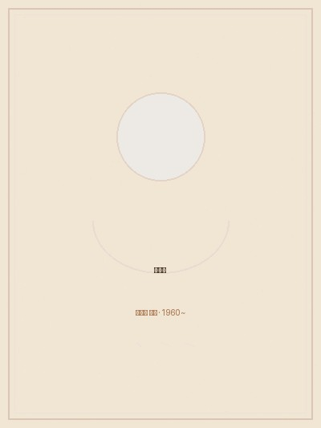

이억배는 한국 민화의 결을 살려 그림책 작업을 해온 한국 창작그림책 1세대 작가입니다. 한국적 미감과 해학을 현대의 그림책으로 구현했다는 평가를 받고 있습니다.
1960년 용인에서 태어나 수원에서 유년 시절을 보냈으며, 홍익대학교 조소과를 졸업했습니다. 1986년 미술동인 '두렁'에 합류해 벽화와 만화, 목판화 등을 그리며 민중미술운동에 참여했고, 공장 노동자를 위한 무료 미술 교실을 열기도 했습니다.
이후 어린 딸을 위해 그림책을 만들기 시작하며 그림책 작가의 길로 들어섰습니다. 1995년 《솔이의 추석 이야기》를 시작으로, 한국 채색화의 미감을 살린 그림책 작업을 이어오고 있습니다. 1998년부터 가족과 함께 경기도 안성에 정착하여 작업하고 있습니다.
《오누이 이야기》로 볼로냐 라가치상 특별부문(우화와 옛이야기) 대상 수상. 시상식은 2026년 4월 볼로냐 국제아동도서전에서 진행 예정.
경향신문 기사 보기 → 뉴스1 기사 보기 →《비무장지대에 봄이 오면》 영문판 When Spring Comes to the DMZ가 2020년 배첼더 아너(Batchelder Honor) 도서로 선정.
ALA 수상 페이지 보기 →《비무장지대에 봄이 오면》 영문판이 프리먼 어워드 가작(Honorable Mention)으로 선정. 커커스 리뷰(Kirkus Reviews) 올해 최고의 그림책에도 선정.
《이야기 주머니 이야기》가 국제아동청소년도서위원회(IBBY) 어너리스트에 선정.
볼로냐 국제아동도서전에 한국 그림책 작가로 초대.
《세상에서 제일 힘센 수탉》 그림으로 BIB(브라티슬라바 국제 일러스트레이션 비엔날레)에 선정.
1993년부터 기획한 《솔이의 추석 이야기》를 길벗어린이에서 출간. 한국 창작그림책의 새 지평을 엶.
민중미술운동에 참여. 벽화, 만화, 목판화 등을 통해 사회적 메시지를 전달하는 작업 시작.
전시, 강연, 협업 등의 문의는 아래로 연락해 주세요.